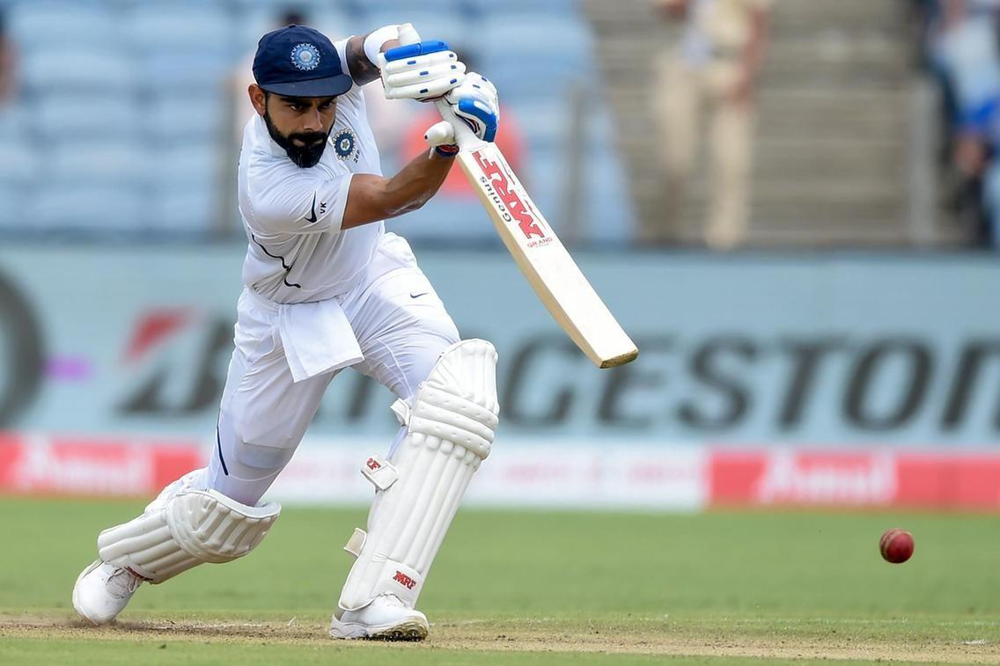
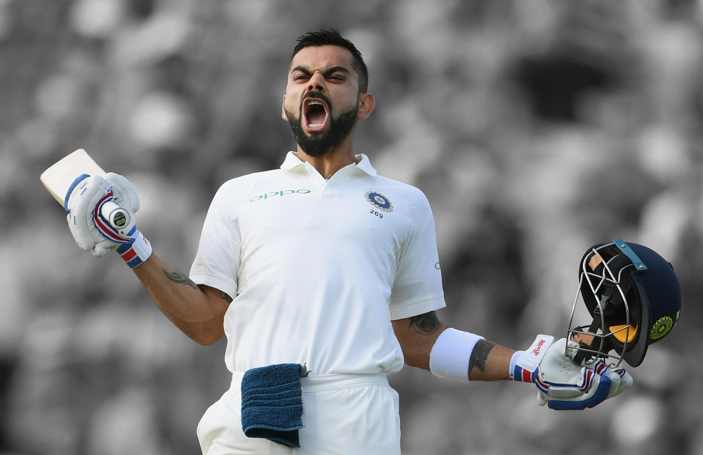

Virat Kohli born 5 November 1988 is an Indian international cricketer and the former captain of the Indian national cricket team. He is a right-handed batsman and an occasional medium-pace bowler. He currently represents Royal Challengers Bengaluru in the IPL and Delhi in domestic cricket. Kohli is widely regarded as one of the greatest limited overs batters of all time.[3] He also holds the record for scoring the most centuries in ODI cricket and stands second in the list of most international centuries scored, and is highest run-scorer in IPL. Kohli was a member of the Indian team that won the 2011 Cricket World Cup, 2013 ICC Champions Trophy, 2024 T20 World Cup and 2025 Champions Trophy. Further captained India to win the ICC Test mace three consecutive times in 2017, 2018, and 2019 In 2013, Kohli was ranked number one in the ICC rankings for ODI batsmen. In 2015, he achieved the summit of T20I rankings. In 2020, the International Cricket Council named him the male cricketer of the decade. Kohli has received many accolades for his performances in cricket. He won the ICC ODI Player of the Year award four times in 2012, 2017, 2018, and 2023. He also won the Sir Garfield Sobers Trophy, given to the ICC Cricketer of the Year, on two occasions, in 2017 and 2018 respectively. In 2018, he became the first player to win both ICC ODI and Test Player of the Year awards in the same year. Also, he was named the Wisden Leading Cricketer in the World for three consecutive years, from 2016 to 2018. At the national level, Kohli was honoured with the Arjuna Award in 2013, the Padma Shri in 2017, and India's highest sporting honour, the Khel Ratna award, in 2018.
Kohli has received many accolades for his performances in cricket. He won the ICC ODI Player of the Year award four times in 2012, 2017, 2018, and 2023. He also won the Sir Garfield Sobers Trophy, given to the ICC Cricketer of the Year, on two occasions, in 2017 and 2018 respectively. In 2018, he became the first player to win both ICC ODI and Test Player of the Year awards in the same year. Also, he was named the Wisden Leading Cricketer in the World for three consecutive years, from 2016 to 2018. At the national level, Kohli was honoured with the Arjuna Award in 2013, the Padma Shri in 2017, and India's highest sporting honour, the Khel Ratna award, in 2018. In 2018, Time magazine included him on its list of the 100 most influential people in the world. Kohli has been deemed one of the most commercially viable athletes, with estimated earnings of ₹634 crore (US$75 million) in the year 2022.
Kohli was born on 5 November 1988 in Delhi into a Punjabi Hindu family. His mother Saroj Kohli is as a housewife while his father Prem Nath Kohli worked as a criminal lawyer. He has an elder brother Vikas and an elder sister Bhawna. His formative years were spent in Uttam Nagar. His early education was at Vishal Bharti Public School.[4] As per his family, Kohli exhibited an early affinity for cricket as a 3-year-old. He would pick up a bat and request his father bowl to him.[5] In 1998, the West Delhi Cricket Academy was created. In May, his father arranged for him to meet Rajkumar Sharma.[6] Upon the suggestion of their neighbours, Kohli's father considered enrolling his son in a professional cricket academy, as they believed his ability merited more than gully cricket.[7] He was unable to secure a place in the U-14 Delhi team, due to extraneous factors. His father reportedly received offers to relocate his son to influential clubs, which would ensure his selection, but he declined the proposals. Kohli eventually found his way into the U-15 team.[8] He received training at the academy and participated in matches at the Sumeet Dogra Academy located at Vasundhara Enclave.[9] In pursuit of furthering his cricketing career, he transferred to Saviour Convent School during his ninth-grade education.[7] On 18 December 2006, his father died due to a cerebral attack.[10] As per his mother, Kohli's demeanour shifted noticeably after his father's death. He took on cricket with newfound seriousness, prioritizing playing time and dedicating himself fully to the sport.[7] Kohli's family resided in Meera Bagh, Paschim Vihar until the year 2015, after which they relocated to Gurgaon.[11]
Kohli's junior cricket career kicked off in October 2002 at the Luhnu Cricket Ground against Himachal Pradesh. His first half-century in domestic cricket happened at Feroze Shah Kotla, where he scored 70 runs against Haryana.[12] By the end of the season, he had amassed a total of 172 runs, emerging as the highest run-scorer for his side with an average of 34.40.[13] During the 2003–04 season of Polly Umrigar Trophy, Kohli was appointed the captain of the U-15 team.[13] He scored 54 runs in Delhi's victory over Himachal Pradesh. In the next fixture against Jammu and Kashmir, Kohli scored his maiden century with a score of 119. By the end of the season, he had a total of 390 runs at an average of 78, which included two centuries.[14] Towards the end of 2004, Kohli earned selection for the 2004–05 Vijay Merchant Trophy with the Delhi U-17 team.[13] In the four matches that he played, Kohli had a total of 470 runs, with his highest score being 251* runs. The team's coach, Ajit Chaudhary, lauded his performance and was particularly impressed with his temperament on the field.[15] He commenced the 2005–06 season with a score of 227 against Punjab. Following their victory over Uttar Pradesh in the quarter-finals, Delhi was scheduled to play against Baroda in the semi-finals. The team had high expectations from Kohli, who had promised his coach to finish the job. True to his word, Kohli went on to score 228 runs, leading Delhi to victory. The team later secured the tournament with a five-wicket win over Mumbai, where he contributed with a half-century in the first innings.[16] He ended as the highest run-scorer with a total of 757 runs from 7 matches, averaging 84.11.[17] On 18 February 2006, Kohli made his debut in List A cricket, playing against Services in the Ranji One-Day Trophy, but he did not get the opportunity to bat during the match.[17] In 2006, Kohli got a spot in the state senior team. Subsequently, he made his first-class debut on 23 November 2006, during the opening match of the Ranji Trophy season against Tamil Nadu. However, his debut innings was a brief one, as he was dismissed after scoring ten runs.[18] In the subsequent match against former champions, Karnataka, Delhi found themselves trailing with a score of 130/5, with Kohli remaining unbeaten on 40 at the end of the day's play. That night, Kohli's father died. Despite the heart-wrenching news, Kohli returned to the match and continued to bat and scored 90 runs before he was dismissed.[19] Chetan Chauhan, the coach, was impressed by his determination and unwavering attitude in the face of adversity. Venkatesh Prasad lauded his crucial knock, which was executed in the midst of an emotional upheaval. After his dismissal, Kohli attended his father's funeral. His innings proved to be crucial for Delhi as they were able to avoid the follow-on. The team's captain, Mithun Manhas, praised Kohli for his performance, acknowledging its pivotal role in the team's success.[20]
Kohli's junior cricket career kicked off in October 2002 at the Luhnu Cricket Ground against Himachal Pradesh. His first half-century in domestic cricket happened at Feroze Shah Kotla, where he scored 70 runs against Haryana.[12] By the end of the season, he had amassed a total of 172 runs, emerging as the highest run-scorer for his side with an average of 34.40.[13] During the 2003–04 season of Polly Umrigar Trophy, Kohli was appointed the captain of the U-15 team.[13] He scored 54 runs in Delhi's victory over Himachal Pradesh. In the next fixture against Jammu and Kashmir, Kohli scored his maiden century with a score of 119. By the end of the season, he had a total of 390 runs at an average of 78, which included two centuries.[14] Towards the end of 2004, Kohli earned selection for the 2004–05 Vijay Merchant Trophy with the Delhi U-17 team.[13] In the four matches that he played, Kohli had a total of 470 runs, with his highest score being 251* runs. The team's coach, Ajit Chaudhary, lauded his performance and was particularly impressed with his temperament on the field.[15] He commenced the 2005–06 season with a score of 227 against Punjab. Following their victory over Uttar Pradesh in the quarter-finals, Delhi was scheduled to play against Baroda in the semi-finals. The team had high expectations from Kohli, who had promised his coach to finish the job. True to his word, Kohli went on to score 228 runs, leading Delhi to victory. The team later secured the tournament with a five-wicket win over Mumbai, where he contributed with a half-century in the first innings.[16] He ended as the highest run-scorer with a total of 757 runs from 7 matches, averaging 84.11.[17]  On 18 February 2006, Kohli made his debut in List A cricket, playing against Services in the Ranji One-Day Trophy, but he did not get the opportunity to bat during the match.[17] In 2006, Kohli got a spot in the state senior team. Subsequently, he made his first-class debut on 23 November 2006, during the opening match of the Ranji Trophy season against Tamil Nadu. However, his debut innings was a brief one, as he was dismissed after scoring ten runs.[18] In the subsequent match against former champions, Karnataka, Delhi found themselves trailing with a score of 130/5, with Kohli remaining unbeaten on 40 at the end of the day's play. That night, Kohli's father died. Despite the heart-wrenching news, Kohli returned to the match and continued to bat and scored 90 runs before he was dismissed.[19] Chetan Chauhan, the coach, was impressed by his determination and unwavering attitude in the face of adversity. Venkatesh Prasad lauded his crucial knock, which was executed in the midst of an emotional upheaval. After his dismissal, Kohli attended his father's funeral. His innings proved to be crucial for Delhi as they were able to avoid the follow-on. The team's captain, Mithun Manhas, praised Kohli for his performance, acknowledging its pivotal role in the team's success.[20]
Kohli's international career began in August 2008 when the 19-year-old had a "surprise call-up" to the ODI squad for a tour of Sri Lanka.[36] He opened the batting due to injuries to senior players, scoring his first half-century in the fourth match.[37] After a brief stint with the India A team, he scored a century against a strong Australian bowling line-up in a tour match.[38] Despite an early BCCI contract, Kohli's place in the team was not secure. A turning point came in the 2009 Emerging Players Tournament in Australia, where he was the top run-scorer, leading his team to victory with a century in the final. This performance cemented his return to the national side.[39] He scored his maiden ODI century in December 2009 against Sri Lanka.[40] By early 2010, he became the third Indian to score two ODI centuries before turning 22.[41] Kohli fielding during a match in December 2010 In 2010, Kohli was appointed vice-captain for a tri-series in Zimbabwe and became the then fastest Indian to score 1,000 ODI runs. After a dip in form during the 2010 Asia Cup, he solidified his position with consistent performances, finishing as India's leading ODI run-scorer for the year.[42] Kohli played a crucial role in India's 2011 World Cup victory, scoring a century on his debut and a 35 in the final.[43][44] Further made his Test debut in June 2011 against the West Indies, but struggled initially and was dropped.[45] He was recalled and eventually found his footing, scoring his maiden Test century in Adelaide in January 2012.[46] He continued to score runs in ODIs, with an unbeaten 133 against Sri Lanka and a career-best 183 against Pakistan in the 2012 Asia Cup, being the standout performances.[47][48]
Born 5 November 1988 (age 36)
Delhi, India Nickname Cheeku[a] Height 5 ft 9 in (175 cm)[2] Batting Right-handed Bowling Right-arm medium Role Top-order batter Relations Anushka Sharma (m. 2017)